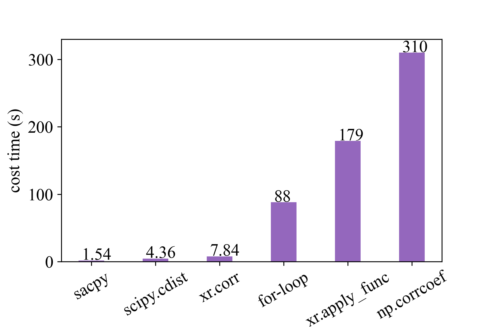

Sacpy: Statistic Analysis for Climate data in Python#
Sacpy (/Sæc’pai/) is an effecient Statistical Analysis tool (e.g. regression, EOF, MCA) for Climate and Meteorology data. Sacpy aims to provide a universal framework for climate data analysis.
It provides a toolkit for
Linear Regression (univariate and multivariate)
Empirical Orthogonal Function (EOF)
Maximum Covariance Analysis (MCA or SVD)
Convenient Plots for Cartopy, Xarray
Convenient Tools for Statistic Analysis
Power spectrum analysis (under testing)
For more details, please refer to the User Guide linked below.
Quick Installation#
Use pip for Installation.
pip install sacpy
Why Choose Sacpy?#
Fast!#
For example, Sacpy is more than 60 times faster than the traditional regression analysis with Python. The following is the time spent performing the same task. Sacpy is fastest.
{kind=link}
Turn to climate data customization!#
Compatible with commonly used meteorological calculation libraries such as numpy and xarray.
Concise code#
You can finish drawing a following figure with just seven lines of code. see examples of concise.

Documentation#
GitHub: ZiluM/sacpy
Install: https://zilum.github.io/Sacpy_Dox/installation.html
User Guide#
Contact us#
Author: Zilu Meng
e-mail: zilumeng@uw.edu
Acknowledgements#
Thanks for Dr.Feng Zhu’s (https://fzhu2e.github.io) help in this project!